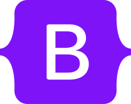
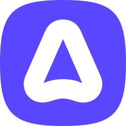
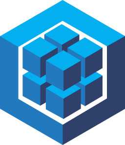
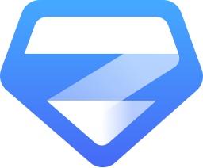

Frontend
Interfaces and mobile flows connected to real product behaviour.
React
Angular
Flutter
TypeScript / JavaScript

BootstrapFULL STACK DEVELOPER · PRODUCT DELIVERY
My name is Andrés Santiago Arias Naranjo. I establish the connection between frontend, backend, data, testing, and deployment to turn real operational problems into software that people actually use — from dashboards to custom management systems for businesses that need to bring order to their operations.
SELECTED WORK / 01—05
Four examples of product context, engineering decisions and delivery across mobile, web and institutional software.
ENGINEERING PROFILE
No percentage bars. Each capability is grounded in the product work it supports.
Interfaces and mobile flows connected to real product behaviour.

BootstrapAPIs, authentication and business rules that can be explained in a review.

AdonisJS Express REST APIsRelational models, validation and testing that make delivery safer.

Sequelize JUnit
Zod PostmanEnough infrastructure context to understand what happens after merge.
EXPERIENCE SNAPSHOT
Security flows, API integrations, backend automation and collaborative delivery in an Agile engineering team.
REST APIs, relational data, third-party integrations, Angular workflows and Linux-based deployment context.
AVAILABLE FOR PRODUCT-MINDED ENGINEERING ROLES
Let’s talk about the product, the technical constraints and the next useful step.